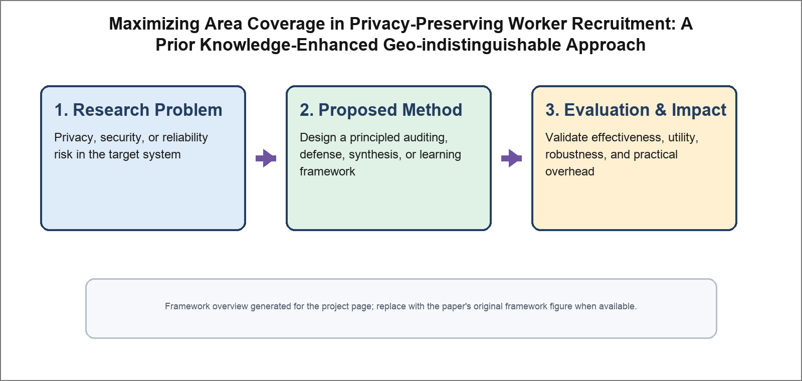

Maximizing Area Coverage in Privacy-Preserving Worker Recruitment: A Prior Knowledge-Enhanced Geo-indistinguishable Approach
IEEE Transactions on Information Forensics & Security (TIFS), 2025

Abstract
Geo-indistinguishability provides strong local differential privacy guarantees for location-based worker recruitment, but naively perturbing locations often hurts area coverage. We study privacy-preserving worker recruitment with the objective of maximizing covered regions under geo-indistinguishable perturbation. We propose a prior knowledge-enhanced approach that models worker uncertainty and optimizes recruitment decisions with privacy constraints. Experiments on real-world datasets show better coverage-utility trade-offs than existing privacy-preserving recruitment baselines.
Resources
Citation
@inproceedings{ZCZZZ25,
author = {Pengfei Zhang and Xiang Cheng and Zhikun Zhang and Youwen Zhu and Ji Zhang},
title = {{Maximizing Area Coverage in Privacy-Preserving Worker Recruitment: A Prior Knowledge-Enhanced Geo-indistinguishable Approach}},
booktitle = {{Transactions on Information Forensics and Security}},
publisher = {IEEE},
year = {2025},
}